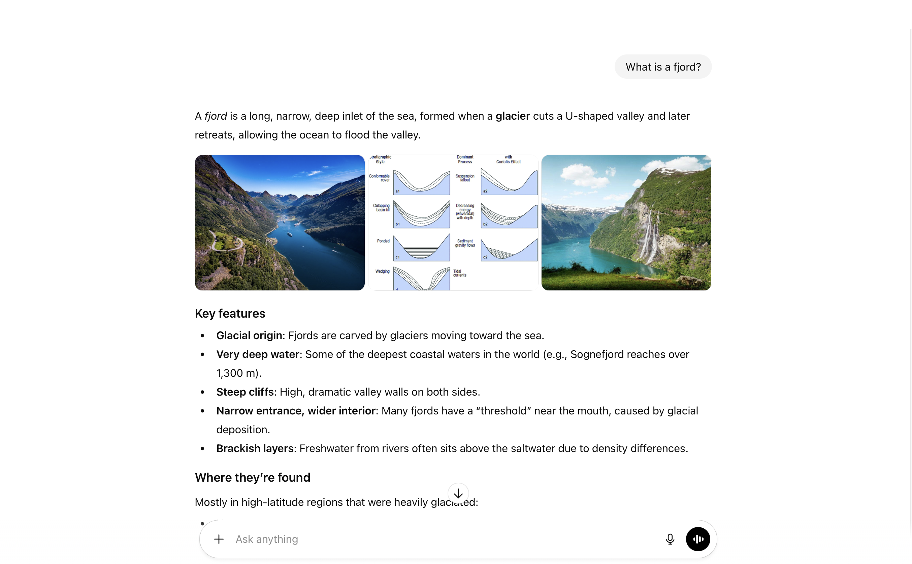

<!DOCTYPE html>
<html>
    <head>
      <title>My experiment</title>
      <!-- jQuery -->
      <script src="https://ajax.googleapis.com/ajax/libs/jquery/3.5.1/jquery.min.js"></script>
      <!-- Proliferate -->
      <script src="https://proliferate.alps.science/static/js/proliferate.js" type="text/javascript"></script>
  
      <script src="https://unpkg.com/jspsych@7.3.4"></script>
      <script src="https://unpkg.com/@jspsych/plugin-html-keyboard-response@1.1.3"></script>
      <script src="https://unpkg.com/@jspsych/plugin-html-button-response@1.1.3"></script>
      <script src="https://unpkg.com/@jspsych/plugin-image-keyboard-response@1.1.3"></script>
      <script src="jspsych/plugin-fullscreen.js"></script>
      <script src="https://unpkg.com/@jspsych/plugin-preload@1.1.3"></script>
      <script src="jspsych/plugin-survey-text.js"></script>
  
      <link href="https://unpkg.com/jspsych@7.3.4/css/jspsych.css" rel="stylesheet" type="text/css" />
      <style>
        body {
          margin: 0;
          padding: 0;
        }
  
        .statement-wrapper {
          width: 900px;
          max-width: 90vw;
          margin: 0 auto 20px auto;
          min-height: 160px;
          display: flex;
          align-items: center;
          justify-content: center;
        }
  
        .statement-box {
          position: relative;
          text-align: center;
          font-size: 24px;
          line-height: 1.25;
          color: black;
          word-wrap: break-word;
          overflow-wrap: break-word;
          user-select: text;
          -webkit-user-select: text;
        }
  
        .word-block {
          position: relative;
          display: inline;
        }
  
        .visible-word {
          color: black;
        }
  
        .trap-text {
        position: absolute;
        left: 100%;
        top: 0;
        opacity: 0;
        pointer-events: none;
        user-select: text;
      }
  
        .q2-block {
          visibility: hidden;
          margin-top: 20px;
          min-height: 160px;
        }
      </style>
    </head>
    <body></body>
  
    <script>
      var phase1_statements = [
        "A week has seven days.",
        "After exercise, muscle lactate levels often return close to normal within about an hour.",
        "Ancient Greek and Roman sculptures were originally painted in colors.",
        "Antibiotics can help the body recover from most viral infections.",
        "Being logged into a service in one tab can affect content on other websites in the same browser.",
        "Black holes have the same gravitational effects as any other equal mass in their place.",
        "Caesar salad is widely credited to a person named Caesar Cardini.",
        "Camels keep a supply of water in their humps to survive long trips without drinking.",
        "During the Middle Ages, most major European cities had clean and reliable drinking water.",
        "Everyone in the world speaks the same language.",
        "From night to night, the Moon's overall shape usually looks about the same.",
        "From one night to the next, constellations usually appear in the same place in the sky.",
        "Hippos produce skin secretions that can appear reddish.",
        "Humans can breathe underwater without equipment.",
        "Humans lived at the same time as woolly mammoths and some sabre-toothed cats.",
        "Humans possess more than five sensory modalities.",
        "If you are cold, drinking alcohol helps your body stay warm.",
        "Many ancient civilizations developed in cold, mountainous regions.",
        "Many of the hottest places on Earth are in dry subtropical areas.",
        "Over the course of a day, the tip of a shadow tends to move mainly from west to east.",
        "Private browsing prevents websites from tracking what you do online.",
        "Regularly cracking your knuckles can increase your risk of arthritis later in life.",
        "Seasons are mainly caused by the tilt of the Earth.",
        "The Coca-Cola bottle's contour shape was designed by a company named Root Glass.",
        "The coldest places on Earth are always found in the Northern Hemisphere.",
        "The far side of the Moon receives about as much sunlight as the near side.",
        "The heart pumps blood through the body.",
        "The Moon produces its own light.",
        "The Roman Empire expanded mostly because it avoided military conflict.",
        "The surface of the Sun is without visible features.",
        "Touching a baby bird will usually make its parents abandon it.",
        "Umami functions as a primary human taste.",
        "Using a VPN makes your online activity completely anonymous.",
        "Water freezes at 0 degrees Celsius under normal conditions."
      ];
  
      var phase1_trial_items = phase1_statements.map(function(text) {
        return {
          statement_text: text
        };
      });
  
      var phase1_n_trials = phase1_trial_items.length;
  
      function escapeHtml(str) {
        return str
          .replace(/&/g, "&amp;")
          .replace(/</g, "&lt;")
          .replace(/>/g, "&gt;")
          .replace(/"/g, "&quot;")
          .replace(/'/g, "&#039;");
      }
  
      function randomGibberish(minLen, maxLen) {
        var chars = "abcdefghijklmnopqrstuvwxyz";
        var len = Math.floor(Math.random() * (maxLen - minLen + 1)) + minLen;
        var out = "";
        for (var i = 0; i < len; i++) {
          out += chars.charAt(Math.floor(Math.random() * chars.length));
        }
        return out;
      }
  
      function buildStatementHTML(sentence) {
        var words = sentence.split(" ");
        var html = "";
  
        for (var i = 0; i < words.length; i++) {
          var cleanWord = escapeHtml(words[i]);
          var trap = randomGibberish(3, 6);
  
          html += '<span class="word-block">';
          html += '<span class="visible-word">' + cleanWord + '</span>';
  
          if (i < words.length - 1) {
            html += '<span class="trap-text" aria-hidden="true">' + trap + '</span>';
          }
  
          html += "</span>";
  
          if (i < words.length - 1) {
            html += " ";
          }
        }
  
        return html;
      }
  
      function buildObfuscatedClipboardText(sentence) {
        var words = sentence.split(" ");
        var parts = [];
  
        for (var i = 0; i < words.length; i++) {
          parts.push(words[i]);
          if (i < words.length - 1) {
            parts.push(randomGibberish(3, 6));
          }
        }
  
        return parts.join(" ");
      }

//trials
    var phase2_statements = [
      "Caesar salad is widely credited to a person named Caesar Cardini.",
      "Over the course of a day, the tip of a shadow tends to move mainly from west to east.",
      "Umami functions as a primary human taste.",
      "Seasons are mainly caused by the tilt of the Earth.",
      "Ancient Greek and Roman sculptures were originally painted in colors.",
      "After exercise, muscle lactate levels often return close to normal within about an hour.",
      "Black holes have the same gravitational effects as any other equal mass in their place.",
      "Regularly cracking your knuckles can increase your risk of arthritis later in life.",
      "The coldest places on Earth are always found in the Northern Hemisphere.",
      "Antibiotics can help the body recover from most viral infections.",
      "From one night to the next, constellations usually appear in the same place in the sky.",
      "Private browsing prevents websites from tracking what you do online.",
      "The Roman Empire expanded mostly because it avoided military conflict.",
      "Camels keep a supply of water in their humps to survive long trips without drinking.",
      "Being logged into a service in one tab can affect content on other websites in the same browser.",
      "The Coca-Cola bottle's contour shape was designed by a company named Root Glass.",
      "Humans lived at the same time as woolly mammoths and some sabre-toothed cats.",
      "Humans possess more than five sensory modalities.",
      "Hippos produce skin secretions that can appear reddish.",
      "The far side of the Moon receives about as much sunlight as the near side.",
      "Many of the hottest places on Earth are in dry subtropical areas.",
      "The surface of the Sun is without visible features.",
      "If you are cold, drinking alcohol helps your body stay warm.",
      "Many ancient civilizations developed in cold, mountainous regions.",
      "Using a VPN makes your online activity completely anonymous.",
      "From night to night, the Moon's overall shape usually looks about the same.",
      "Touching a baby bird will usually make its parents abandon it.",
      "During the Middle Ages, most major European cities had clean and reliable drinking water."
    ];

    var phase2_answer_assignments = {
      "Caesar salad is widely credited to a person named Caesar Cardini.": { ai: "False", human: "True" },
      "Over the course of a day, the tip of a shadow tends to move mainly from west to east.": { ai: "False", human: "True" },
      "Umami functions as a primary human taste.": { ai: "False", human: "True" },
      "Seasons are mainly caused by the tilt of the Earth.": { ai: "False", human: "True" },
      "Ancient Greek and Roman sculptures were originally painted in colors.": { ai: "False", human: "True" },
      "After exercise, muscle lactate levels often return close to normal within about an hour.": { ai: "False", human: "True" },
      "Black holes have the same gravitational effects as any other equal mass in their place.": { ai: "False", human: "True" },
      "Regularly cracking your knuckles can increase your risk of arthritis later in life.": { ai: "False", human: "True" },
      "The coldest places on Earth are always found in the Northern Hemisphere.": { ai: "False", human: "True" },
      "Antibiotics can help the body recover from most viral infections.": { ai: "False", human: "True" },
      "From one night to the next, constellations usually appear in the same place in the sky.": { ai: "False", human: "True" },
      "Private browsing prevents websites from tracking what you do online.": { ai: "False", human: "True" },
      "The Roman Empire expanded mostly because it avoided military conflict.": { ai: "False", human: "True" },
      "Camels keep a supply of water in their humps to survive long trips without drinking.": { ai: "False", human: "True" },
      "Being logged into a service in one tab can affect content on other websites in the same browser.": { ai: "True", human: "False" },
      "The Coca-Cola bottle's contour shape was designed by a company named Root Glass.": { ai: "True", human: "False" },
      "Humans lived at the same time as woolly mammoths and some sabre-toothed cats.": { ai: "True", human: "False" },
      "Humans possess more than five sensory modalities.": { ai: "True", human: "False" },
      "Hippos produce skin secretions that can appear reddish.": { ai: "True", human: "False" },
      "The far side of the Moon receives about as much sunlight as the near side.": { ai: "True", human: "False" },
      "Many of the hottest places on Earth are in dry subtropical areas.": { ai: "True", human: "False" },
      "The surface of the Sun is without visible features.": { ai: "True", human: "False" },
      "If you are cold, drinking alcohol helps your body stay warm.": { ai: "True", human: "False" },
      "Many ancient civilizations developed in cold, mountainous regions.": { ai: "True", human: "False" },
      "Using a VPN makes your online activity completely anonymous.": { ai: "True", human: "False" },
      "From night to night, the Moon's overall shape usually looks about the same.": { ai: "True", human: "False" },
      "Touching a baby bird will usually make its parents abandon it.": { ai: "True", human: "False" },
      "During the Middle Ages, most major European cities had clean and reliable drinking water.": { ai: "True", human: "False" }
    };

    // 
    var phase2_n_trials = phase2_statements.length;

var total_n_trials = phase1_n_trials + phase2_n_trials;

      /* initialize jsPsych once for both parts */
      var jsPsych = initJsPsych({
        show_progress_bar: true,
        auto_update_progress_bar: false,
        on_finish: function(data) {
          var vals = data.values();
          if (vals.length > total_n_trials) {
            proliferate.submit({ "trials": data.values() });
          }
        }
      });

      /* one continuous timeline */
      var timeline = [];

// welcome
      var phase1_instructions = {
        type: jsPsychHtmlButtonResponse,
        stimulus:
          '<div style="text-align:left; width:700px; margin:auto; line-height:1.6;">' +
            '<p>Welcome to the first part of the study!</p>' +
            '<p>In this task, you will read a series of short statements about everyday facts, practical knowledge, or general information. Your task is simply to evaluate each statement.</p>' +
            '<p>For every statement, you will provide <strong>two</strong> responses:</p>' +
            '<p><strong>1.</strong> Do you think the statement is true or false?</p>' +
            '<p><strong>2.</strong> How confident are you in your choice? (0-100 slider)</p>' +
            '<p><strong>Please note:</strong></p>' +
            '<ul>' +
              '<li>The entire study will take approximately <strong>35 minutes</strong> to complete.</li>' +
              // '<li> After that, the task will end automatically.</li>' +
              '<li>Please rely on your own knowledge and intuition.</li>' +
              '<li>Please do not use any external resources (e.g. Google or other online search engines) to look for answers during the experiment.</li>' +
              '<li>You will be compensated for your time regardless of correctness.</li>' +
            '</ul>' +
            '<p>Please read each statement carefully and answer as accurately as you can.</p>' +
            '<p>Click <strong>Next</strong> to begin Part 1.</p>' +
          '</div>',
        choices: ['Next'],
        button_html: '<button class="jspsych-btn" style="margin-top: 20px;">%choice%</button>'
      };
      timeline.push(phase1_instructions);

// fullscreen
      var enter_fullscreen = {
        type: jsPsychFullscreen,
        fullscreen_mode: true
      };
      timeline.push(enter_fullscreen);

// shufflePhase1
      function shufflePhase1(array) {
        for (let i = array.length - 1; i > 0; i--) {
          const j = Math.floor(Math.random() * (i + 1));
          [array[i], array[j]] = [array[j], array[i]];
        }
        return array;
      }
  
      // randomized
      phase1_trial_items = shufflePhase1(phase1_trial_items);
  
      var phase1CurrentTruth = null;
      var phase1CurrentConfidence = null;
  
      function createPhase1Trial(item, index) {
        return {
          type: jsPsychHtmlButtonResponse,
  
          stimulus:
            '<div class="statement-wrapper">' +
              '<div id="statement-box" class="statement-box" data-plain="' + escapeHtml(item.statement_text) + '">' +
                buildStatementHTML(item.statement_text) +
              '</div>' +
            '</div>' +
  
            '<div id="q1">' +
              '<p>1. Do you think this statement is true or false?<br>' +
              '<label><input type="radio" name="truth" value="true"> True</label>&nbsp;&nbsp;' +
              '<label><input type="radio" name="truth" value="false"> False</label></p>' +
            '</div>' +
  
            '<div id="q2" class="q2-block">' +
              '<p>2. How confident are you in your choice?</p>' +
              '<div style="width:400px; margin:auto; position:relative;">' +
                '<input type="range" id="conf-slider" min="0" max="100" value="0" step="1" style="width:100%;">' +
                '<span id="conf-value" style="position:absolute; right:-35px; top:0px;">0</span>' +
                '<div style="width:100%; display:flex; justify-content:space-between; margin-top:5px; padding-left:15px;">' +
                  '<span>0</span><span>50</span><span>100</span>' +
                '</div>' +
              '</div>' +
            '</div>',
  
          choices: ['Next'],
          button_html: '<button class="jspsych-btn" style="margin-top:40px;">%choice%</button>',
  
          data: {
            trial_type: 'truth_confidence',
            statement_index: index,
            statement_text: item.statement_text
          },
  
          on_load: function () {
            var display = jsPsych.getDisplayElement();
            var q2 = display.querySelector('#q2');
            var slider = display.querySelector('#conf-slider');
            var valueSpan = display.querySelector('#conf-value');
            var radios = display.querySelectorAll('input[name="truth"]');
            var nextButton = display.querySelector('button.jspsych-btn');
            var statementBox = display.querySelector('#statement-box');
  
            nextButton.disabled = true;
  
            phase1CurrentTruth = null;
            phase1CurrentConfidence = slider.value;
            valueSpan.textContent = slider.value;
  
            radios.forEach(function (r) {
              r.addEventListener('change', function () {
                phase1CurrentTruth = this.value;
                q2.style.visibility = 'visible';
              });
            });
  
            slider.addEventListener('input', function () {
              phase1CurrentConfidence = slider.value;
              valueSpan.textContent = slider.value;
              if (phase1CurrentTruth !== null) nextButton.disabled = false;
            });
  
            if (statementBox) {
              statementBox.addEventListener('copy', function(e) {
                var obfuscatedText = buildObfuscatedClipboardText(item.statement_text);
                if (e.clipboardData) {
                  e.clipboardData.setData('text/plain', obfuscatedText);
                  e.preventDefault();
                }
              });
  
              statementBox.addEventListener('cut', function(e) {
                var obfuscatedText = buildObfuscatedClipboardText(item.statement_text);
                if (e.clipboardData) {
                  e.clipboardData.setData('text/plain', obfuscatedText);
                  e.preventDefault();
                }
              });
  
              statementBox.addEventListener('dragstart', function(e) {
                if (e.dataTransfer) {
                  e.dataTransfer.setData('text/plain', buildObfuscatedClipboardText(item.statement_text));
                }
              });
            }
  
            document.addEventListener('contextmenu', function(e) {
              if (statementBox && statementBox.contains(e.target)) {
                e.preventDefault();
              }
            }, { once: true });
          },
  
          on_finish: function (data) {
            data.truth = phase1CurrentTruth;
            data.confidence = phase1CurrentConfidence;
            jsPsych.setProgressBar(jsPsych.getProgressBarCompleted() + 1 / total_n_trials);
          }
        };
      }
  
      // trial
      phase1_trial_items.forEach(function(item, idx) {
        timeline.push(createPhase1Trial(item, idx));
      });

// welcome
    var phase2_instructions = {
      type: jsPsychHtmlButtonResponse,
      stimulus:
      '<div style="text-align:left; width:700px; margin:auto; line-height:1.6;">' +

        '<p>Welcome to the second part of the study!</p>' +

        '<p>In this task, you will read a series of short statements about everyday facts, practical knowledge, or general information. Each statement will be accompanied by two answers:</p>' +
        '<ul>' +
        '<li>one from an <strong>generative AI</strong></li>' +
        '<li>one from a <strong>human participant</strong></li>' +
        '</ul>' +

        '<p>The <strong>generative AI answer</strong> comes from a <strong>randomly selected generative AI </strong>. </p>'+
        '<p> The <strong>human answer</strong> comes from a <strong>randomly selected participant</strong> who previously completed the same evaluation task.</p>' +

        '</div>',

      choices: ['Next'],
      button_html: '<button class="jspsych-btn" style="margin-top: 20px;">%choice%</button>'
    };
    timeline.push(phase2_instructions);

// add AI description
     var phase2_ai_intro = {
      type: jsPsychHtmlButtonResponse,
      stimulus:
        '<div style="text-align:left; width:700px; margin:auto; line-height:1.6;">' +

          // '<p>Before the task begins, we would like to briefly introduce some common AI systems, as these will be mentioned later in the study.</p>' +

          // '<p>AI systems are now integrated into many everyday tools. For example, when searching on Google, the first result may appear as an <strong>"AI Overview"</strong>--an automatically generated answer produced by an AI system (such as Google\'s Gemini). An example is shown in Figure 1 below.</p>' +

          
          // '' +
          // '<p><em>Figure 1. Example of an AI Overview in Google Search.</em></p>' +

          // '<p>AI systems are also used in conversational tools such as <strong>ChatGPT</strong>, <strong>Gemini</strong>, <strong>Claude</strong>, and <strong>Microsoft Copilot</strong>, along with many similar services often referred to as "generative AIs". These tools can generate answers, explanations, and suggestions across a wide range of everyday topics.</p>' +

          // '<p>This brief introduction is only meant to familiarize you with the types of systems referred to as "generative AIs" in this study. </p>' +


          // '<p>Click <strong>Next</strong> to continue.</p>' +
          '<p>Before the task begins, we would like to briefly introduce some common AI systems, as these will be mentioned later in the study.</p>'+

          "<p>AI systems are now integrated into many everyday tools. For example, when searching for information or asking a question online, services may provide an <strong>AI-generated answer</strong> produced by systems such as <strong>OpenAI's GPT</strong> models. An example is shown in Figure 1 below.</p>"+

          ''+
          '<p><em>Figure 1. Example of an AI-generated answer using a GPT model.</em></p>'+

          '<p>Some other widely used examples include <strong>Gemini</strong>, <strong>Claude</strong>, and <strong>Microsoft Copilot</strong>. These systems can generate answers, explanations, and suggestions across a wide range of everyday topics. When searching on Google, you may also see an "AI Overview"-a type of AI-generated answer that similarly draws on such models.</p>'+


          '<p>This brief introduction is only meant to familiarize you with the types of systems referred to as <strong>"generative AIs"</strong> in this study.</p>'+

          '<p>Click <strong>Next</strong> to continue.</p>'+


        '</div>',
      choices: ['Next'],
      button_html: '<button class="jspsych-btn" style="margin-top: 20px;">%choice%</button>'
    };
    timeline.push(phase2_ai_intro);

    var phase2_instructions_a = {
      type: jsPsychHtmlButtonResponse,
      stimulus:
        '<div style="text-align:left; width:700px; margin:auto; line-height:1.6;">' +

        '<p>The statements in this task were selected from a previous study, where the generative AI and the human participant gave contradictory answers in each case.</p>'+

        '<p>Your task is to evaluate the information presented.</p>' +

        '<p>For every statement, you will provide <strong>two</strong> responses:</p>' +
        // '<p><strong>1. Source endorsement</strong>: Which answer do you agree with?(generative AI / Human)</p>' +
        // '<p><strong>2. Confidence</strong>: How confident are you in your choice? (0-100 slider)</p>' +
        '<p><strong>1.</strong> For each statement, who do you agree with? (generative AI / human)</p>'+
        '<p><strong>2.</strong> How confident are you in your choice? (0-100)</p>'+

        '<p><strong>Please note:</strong></p>' +
        '<ul>' +
          // '<li>You will have up to <strong>30 minutes</strong> to complete the task. After that, the task will end automatically.</li>' +
            '<li>Please rely on your own knowledge and intuition.</li>' +
            '<li>Please do not use any external resources (e.g. Google or other online search engines) to look for answers during the experiment.</li>' +
            '<li>You will be compensated for your time regardless of correctness.</li>' +
          '</ul>' +
          '<p>Please read each statement carefully and answer as accurately as you can.</p>' +
        '<p>Click <strong>Next</strong> to begin Part 2.</p>' +

        '</div>',

      choices: ['Next'],
      button_html: '<button class="jspsych-btn" style="margin-top: 20px;">%choice%</button>'
    };
    timeline.push(phase2_instructions_a);

// shufflePhase2 
    function shufflePhase2(array) {
      for (let i = array.length - 1; i > 0; i--) {
        const j = Math.floor(Math.random() * (i + 1));
        [array[i], array[j]] = [array[j], array[i]];
      }
      return array;
    }

    // randomnize
    phase2_statements = shufflePhase2(phase2_statements);

    
    var phase2CurrentTruth = null;
    var phase2CurrentConfidence = null;

 // trial: source choice + confidence slider
function createPhase2Trial(statement, index) {
  return {
    type: jsPsychHtmlButtonResponse,
    stimulus:
      // strong
      '<p id="statement-box" class="statement-box" data-plain="' + escapeHtml(statement) + '" style="font-size:20px; margin-bottom:20px;"><strong>' + buildStatementHTML(statement) + '</strong></p>' +

      // '<p>Answer from an generative AI</strong>: <strong>False</strong>.</p>' +
      // '<p>Answer from a participant</strong>: <strong>True</strong>.</p>' +
      '<p>1. Who do you agree with?</p>' +

      '<div style="display:flex; justify-content:center; gap:40px; margin:25px 0;">' +

        '<button class="choice-btn" data-value="chatbot" ' +
        'style="width:220px; padding:14px 0; font-size:16px; border:2px solid #ccc; border-radius:10px; background:white; cursor:pointer;">' +
        'Generative AI: ' + phase2_answer_assignments[statement].ai + '</button>' +

        '<button class="choice-btn" data-value="human" ' +
        'style="width:220px; padding:14px 0; font-size:16px; border:2px solid #ccc; border-radius:10px; background:white; cursor:pointer;">' +
        'Human: ' + phase2_answer_assignments[statement].human + '</button>' +

      '</div>' +

      
      // '<label><input type="radio" name="source_choice" value="chatbot"> generative AI</label>&nbsp;&nbsp;' +
      // '<label><input type="radio" name="source_choice" value="human"> Human</label></p>' +

      // Q2：confidence
      // '<p style="margin-top:20px;">2. How confident are you in your choice?</p>' +
      // '<div style="width:400px; margin:auto; position:relative;">' +
        '<div id="q2" style="visibility:hidden; margin-top:20px; min-height:120px;">' +

        '<p>2. How confident are you in your choice?</p>' +
        '<div style="width:400px; margin:auto; position:relative;">' +
          '<input type="range" id="conf-slider" min="0" max="100" value="0" step="1" style="width:100%;">' +
          '<span id="conf-value" style="position:absolute; right:-35px; top:0px; font-size:16px;">0</span>' +
          '<div style="width:100%; display:flex; justify-content:space-between; margin-top:5px;padding-left:15px;">' +
            '<span>0</span><span>50</span><span>100</span>' +
          '</div>' +
        '</div>' +

       
      '</div>',

    choices: ['Next'],
    // move Next button
    button_html: '<button class="jspsych-btn" style="margin-top: 40px;">%choice%</button>',

    data: {
      trial_type: 'truth_confidence',
      statement_index: index,
      statement: statement
    },

//     on_load: function () {
//       var display = jsPsych.getDisplayElement();
//       var slider = display.querySelector('#conf-slider');
//       var valueSpan = display.querySelector('#conf-value');

//       var radios = display.querySelectorAll('input[name="source_choice"]');
//       var buttons = display.querySelectorAll('.choice-btn');

//       var nextButton = display.querySelector('button.jspsych-btn');
//       nextButton.disabled = true;

//       var sliderMoved = false;   
//       var sourceChosen = false;  

//       phase2CurrentTruth = null;
//       phase2CurrentConfidence = slider.value;

//       valueSpan.textContent = slider.value;

//       slider.addEventListener('input', function () {
//         sliderMoved = true;
//         phase2CurrentConfidence = slider.value;
//         valueSpan.textContent = slider.value;

//         if (sliderMoved && sourceChosen) nextButton.disabled = false;
//       });

//       radios.forEach(function (r) {
//         r.addEventListener('change', function () {
//           sourceChosen = true;
//           phase2CurrentTruth = this.value;

//           if (sliderMoved && sourceChosen) nextButton.disabled = false;
//         });
//       });
//     },

//     on_finish: function (data) {
//       data.truth = phase2CurrentTruth;
//       data.confidence = phase2CurrentConfidence;

//       var curr = jsPsych.getProgressBarCompleted();
//       jsPsych.setProgressBar(curr + (1 / total_n_trials));
//     }
//   };
// }
on_load: function () {
  var display = jsPsych.getDisplayElement();
  var q2 = display.querySelector('#q2');
  var slider = display.querySelector('#conf-slider');
  var valueSpan = display.querySelector('#conf-value');
  var statementBox = display.querySelector('#statement-box');

  var buttons = display.querySelectorAll('.choice-btn');

  var nextButton = display.querySelector('button.jspsych-btn');
  nextButton.disabled = true;

  var sliderMoved = false;
  var sourceChosen = false;

  phase2CurrentTruth = null;
  phase2CurrentConfidence = slider.value;

  valueSpan.textContent = slider.value;

  if (statementBox) {
    statementBox.addEventListener('copy', function(e) {
      var obfuscatedText = buildObfuscatedClipboardText(statement);
      if (e.clipboardData) {
        e.clipboardData.setData('text/plain', obfuscatedText);
        e.preventDefault();
      }
    });

    statementBox.addEventListener('cut', function(e) {
      var obfuscatedText = buildObfuscatedClipboardText(statement);
      if (e.clipboardData) {
        e.clipboardData.setData('text/plain', obfuscatedText);
        e.preventDefault();
      }
    });

    statementBox.addEventListener('dragstart', function(e) {
      if (e.dataTransfer) {
        e.dataTransfer.setData('text/plain', buildObfuscatedClipboardText(statement));
      }
    });
  }

  document.addEventListener('contextmenu', function(e) {
    if (statementBox && statementBox.contains(e.target)) {
      e.preventDefault();
    }
  }, { once: true });

  // slider 
  slider.addEventListener('input', function () {
    sliderMoved = true;
    phase2CurrentConfidence = slider.value;
    valueSpan.textContent = slider.value;

    if (sliderMoved && sourceChosen) nextButton.disabled = false;
  });

  // button
  buttons.forEach(function (btn) {
    
    btn.addEventListener('click', function () {
      q2.style.visibility = 'visible';
      sourceChosen = true;
      phase2CurrentTruth = this.getAttribute('data-value');

      // clear highlight
      buttons.forEach(b => {
        b.style.border = '2px solid #ccc';
        b.style.background = 'white';
      });

      // highlight
      this.style.border = '2px solid #007bff';
      this.style.background = '#e6f0ff';

      if (sliderMoved && sourceChosen) nextButton.disabled = false;
    });
  });
},

on_finish: function (data) {
  data.truth = phase2CurrentTruth;
  data.confidence = phase2CurrentConfidence;

  var curr = jsPsych.getProgressBarCompleted();
  jsPsych.setProgressBar(curr + (1 / total_n_trials));
}
  }
};


    // trial
    phase2_statements.forEach(function(stmt, idx) {
      timeline.push(createPhase2Trial(stmt, idx));
    });

      // Debriefing: disclose the correct answers before the final comment box
      var debriefing_items = [
        { statement: "A week has seven days.", truth: "True" },
        { statement: "After exercise, muscle lactate levels often return close to normal within about an hour.", truth: "True" },
        { statement: "Ancient Greek and Roman sculptures were originally painted in colors.", truth: "True" },
        { statement: "Antibiotics can help the body recover from most viral infections.", truth: "False" },
        { statement: "Being logged into a service in one tab can affect content on other websites in the same browser.", truth: "True" },
        { statement: "Black holes have the same gravitational effects as any other equal mass in their place.", truth: "True" },
        { statement: "Caesar salad is widely credited to a person named Caesar Cardini.", truth: "True" },
        { statement: "Camels keep a supply of water in their humps to survive long trips without drinking.", truth: "False" },
        { statement: "During the Middle Ages, most major European cities had clean and reliable drinking water.", truth: "False" },
        { statement: "Everyone in the world speaks the same language.", truth: "False" },
        { statement: "From night to night, the Moon's overall shape usually looks about the same.", truth: "False" },
        { statement: "From one night to the next, constellations usually appear in the same place in the sky.", truth: "False" },
        { statement: "Hippos produce skin secretions that can appear reddish.", truth: "True" },
        { statement: "Humans can breathe underwater without equipment.", truth: "False" },
        { statement: "Humans lived at the same time as woolly mammoths and some sabre-toothed cats.", truth: "True" },
        { statement: "Humans possess more than five sensory modalities.", truth: "True" },
        { statement: "If you are cold, drinking alcohol helps your body stay warm.", truth: "False" },
        { statement: "Many ancient civilizations developed in cold, mountainous regions.", truth: "False" },
        { statement: "Many of the hottest places on Earth are in dry subtropical areas.", truth: "True" },
        { statement: "Over the course of a day, the tip of a shadow tends to move mainly from west to east.", truth: "True" },
        { statement: "Private browsing prevents websites from tracking what you do online.", truth: "False" },
        { statement: "Regularly cracking your knuckles can increase your risk of arthritis later in life.", truth: "False" },
        { statement: "Seasons are mainly caused by the tilt of the Earth.", truth: "True" },
        { statement: "The Coca-Cola bottle's contour shape was designed by a company named Root Glass.", truth: "True" },
        { statement: "The coldest places on Earth are always found in the Northern Hemisphere.", truth: "False" },
        { statement: "The far side of the Moon receives about as much sunlight as the near side.", truth: "True" },
        { statement: "The heart pumps blood through the body.", truth: "True" },
        { statement: "The Moon produces its own light.", truth: "False" },
        { statement: "The Roman Empire expanded mostly because it avoided military conflict.", truth: "False" },
        { statement: "The surface of the Sun is without visible features.", truth: "False" },
        { statement: "Touching a baby bird will usually make its parents abandon it.", truth: "False" },
        { statement: "Umami functions as a primary human taste.", truth: "True" },
        { statement: "Using a VPN makes your online activity completely anonymous.", truth: "False" },
        { statement: "Water freezes at 0 degrees Celsius under normal conditions.", truth: "True" }
      ];

      function buildDebriefingRows(items) {
        return items.map(function(item, index) {
          return (
            '<tr style="border-bottom:1px solid #dddddd;">' +
              '<td style="padding:10px 12px; vertical-align:top; width:42px;">' + (index + 1) + '</td>' +
              '<td style="padding:10px 12px; vertical-align:top;">' + escapeHtml(item.statement) + '</td>' +
              '<td style="padding:10px 12px; vertical-align:top; width:130px;"><strong>' + item.truth + '</strong></td>' +
            '</tr>'
          );
        }).join('');
      }

      var debriefing = {
        type: jsPsychHtmlButtonResponse,
        stimulus:
          '<div style="text-align:left; width:1000px; max-width:92vw; margin:30px auto; line-height:1.5;">' +
            '<h2 style="text-align:center; margin-bottom:24px;">Correct Answers</h2>' +
            '<p>Thank you for completing the main tasks. The purpose of this study was to investigate whether people revise their initial decisions when presented with conflicting information from different sources.</p>' +
            '<p>As part of the debriefing, the correct answers to all statements are provided below. Please take a moment to review them before continuing.</p>' +
            '<table style="width:100%; border-collapse:collapse; margin-top:24px; font-size:18px;">' +
              '<thead>' +
                '<tr style="background:#f2f2f2; border-bottom:2px solid #bbbbbb;">' +
                  '<th style="padding:10px 12px; text-align:left;">#</th>' +
                  '<th style="padding:10px 12px; text-align:left;">Statement</th>' +
                  '<th style="padding:10px 12px; text-align:left;">Correct answer</th>' +
                '</tr>' +
              '</thead>' +
              '<tbody>' + buildDebriefingRows(debriefing_items) + '</tbody>' +
            '</table>' +
          '</div>',
        choices: ['Continue'],
        button_html: '<button class="jspsych-btn" style="margin:20px 0 40px;">%choice%</button>',
        data: {
          screen: 'debriefing_correct_answers'
        }
      };
      timeline.push(debriefing);

      // Final comment box and thank-you sequence moved from Part 1

var final_survey = {
        type: jsPsychSurveyText,
        questions: [
          {
            prompt:
              'If you encountered any technical difficulties, found anything odd, or if you have any other comments about the experiment that you would like to share with us, please type them in the box below:',
            rows: 5
          }
        ]
      };
      timeline.push(final_survey);
  
      // finish
      var final_end_of_experiment = {
        type: jsPsychHtmlKeyboardResponse,
        stimulus:
          '<p>Thanks for your participation. This is the end of the experiment.<br>' +
          'Please press the space bar to exit.</p>',
        trial_duration: null,
        choices: [' ']
      };
      timeline.push(final_end_of_experiment);
  
      // exit fullscreen
      var final_exit_fullscreen = {
        type: jsPsychFullscreen,
        fullscreen_mode: false
      };
      timeline.push(final_exit_fullscreen);

      // start the combined experiment

      jsPsych.run(timeline);
  </script>
  </html>
